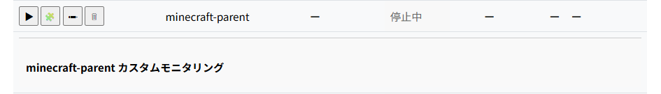
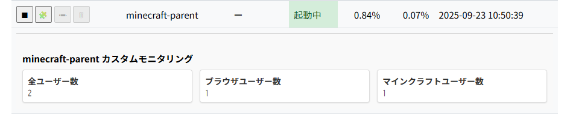
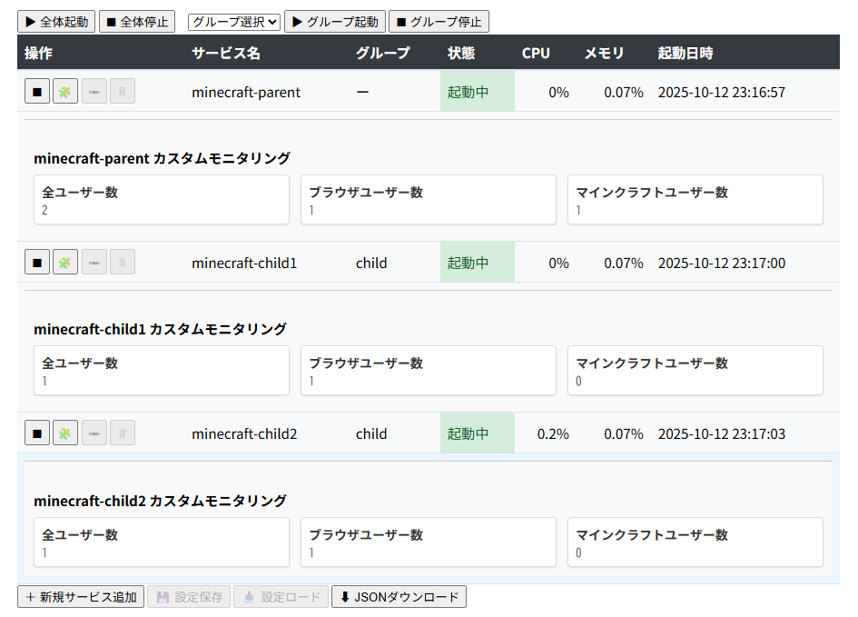

【カスタムモニタリング機能】
はじめに
本記事では、UDP通信によるデータ連携の仕組みと、GUI上での表示方法、設定ファイル（
operator_config.js）による定義方法について詳しく解説します。シンプルソケット機能については別記事で紹介しますので、ここでは概要のみ触れます。
カスタムモニタリング機能とは
GUIランチャーの「カスタムモニタリング機能」を利用すると、サービスごとに独自のデータを画面上に表示できます。
例えば、マインクラフトサーバー環境であれば「ブラウザユーザー数」「マインクラフトユーザー数」「全ユーザー数」といった利用状況をリアルタイムに可視化できます。
また、開発中サービスのデバッグ用に任意の数値や状態を送信して表示させることも可能です。
表示位置はサービス一覧の各行の直下にアコーディオン形式で展開されるため、標準のCPU／メモリ監視と並行して確認できます。

停止中のカスタムモニタリング表示

起動中のカスタムモニタリング表示
例えば、マインクラフトサーバー環境であれば「ブラウザユーザー数」「マインクラフトユーザー数」「全ユーザー数」といった利用状況をリアルタイムに可視化できます。
また、開発中サービスのデバッグ用に任意の数値や状態を送信して表示させることも可能です。
表示位置はサービス一覧の各行の直下にアコーディオン形式で展開されるため、標準のCPU／メモリ監視と並行して確認できます。
サービスからのデータ送信仕様
カスタムモニタリングのデータは、サービス側からUDP通信を用いて送信します。
フォーマットはシンプルで、先頭2バイトにペイロード長を持ち、その後にJSON配列を格納します。
JSONの各要素は以下の3つのキーを持ちます。
この仕組みにより、サービス固有のメトリクスを柔軟に可視化できます。
※ 補足：複数データタイプを同時送信可能
フォーマットはシンプルで、先頭2バイトにペイロード長を持ち、その後にJSON配列を格納します。
JSONの各要素は以下の3つのキーを持ちます。
- service：サービス名
- type：データタイプ名（例：
browser_users） - data：実際の数値や文字列データ
この仕組みにより、サービス固有のメトリクスを柔軟に可視化できます。
[
{
"service": "minecraft-parent",
"type": "browser_users",
"data": 12
},
{
"service": "minecraft-parent",
"type": "mc_users",
"data": 5
},
{
"service": "minecraft-parent",
"type": "total_users",
"data": 17
}
]
※ 補足：複数データタイプを同時送信可能
シンプルソケット機能の概要
データ送信には SOCKET-MANAGER Framework が提供する「シンプルソケット機能」を利用すると便利です。
この機能を使えば、TCP/UDPを用いた単純な送受信を簡潔に実装できます。
ジェネレータクラスを利用することで、TCPサーバー／TCPクライアント／UDPサーバー／UDPクライアントといった各種ソケット種別を統一的なインターフェースで生成可能です。
さらに、コマンドによるスキャフォールディングに対応しているため、最小限の手間で通信処理を組み込めます。
※ 詳細は別記事で解説しています → シンプルソケット機能の詳細はこちら
この機能を使えば、TCP/UDPを用いた単純な送受信を簡潔に実装できます。
ジェネレータクラスを利用することで、TCPサーバー／TCPクライアント／UDPサーバー／UDPクライアントといった各種ソケット種別を統一的なインターフェースで生成可能です。
さらに、コマンドによるスキャフォールディングに対応しているため、最小限の手間で通信処理を組み込めます。
※ 詳細は別記事で解説しています → シンプルソケット機能の詳細はこちら
GUI側の表示定義
GUIに表示するカスタムモニタリング項目は、
各項目は以下のキーを持ち、サービス名やデータタイプ名とUDPで受信したデータを対応付けます。
運用者は標準のリソース監視と並行して、サービス固有のメトリクスを直感的に確認できるようになります。

スクリーンショット例（設定反映後の表示）
app/client/operator_config.js に定義します。各項目は以下のキーを持ち、サービス名やデータタイプ名とUDPで受信したデータを対応付けます。
- host：対象サーバーのホスト名
- port：対象サーバーのポート番号
- service：サービス名
- type：データタイプ名
- label：GUI上に表示するラベル名
運用者は標準のリソース監視と並行して、サービス固有のメトリクスを直感的に確認できるようになります。
const operator_config = [
{
host: "192.168.0.10",
port: 5000,
service: "minecraft-parent",
type: "total_users",
label: "全ユーザー数"
},
{
host: "192.168.0.10",
port: 5000,
service: "minecraft-parent",
type: "mc_users",
label: "ブラウザユーザー数"
},
{
host: "192.168.0.10",
port: 5000,
service: "minecraft-parent",
type: "mc_users",
label: "マインクラフトユーザー数"
}
];
おわりに
今回は同一サーバー内での実例を紹介しましたが、複数サーバーにまたがって利用することも可能です。
対象サーバーからは、自身のサービスを管理している GUI ランチャーのホスト名（デフォルト：localhost）とポート番号（デフォルト：15000）に対して UDP 通信でデータを送信することで認識されます。
GUI 側では、アコーディオン UI に入力されたホスト名／ポート番号と、対象サービスから送信されるサービス名／データタイプ名を識別子として照合し、表示対象のサービスを特定します。
そのため、送信側で指定する宛先ホスト名／ポート番号と、受信側（アコーディオン UI）で設定するホスト名／ポート番号が一致していない場合、データは正しく反映されませんのでご注意ください。
対象サーバーからは、自身のサービスを管理している GUI ランチャーのホスト名（デフォルト：localhost）とポート番号（デフォルト：15000）に対して UDP 通信でデータを送信することで認識されます。
GUI 側では、アコーディオン UI に入力されたホスト名／ポート番号と、対象サービスから送信されるサービス名／データタイプ名を識別子として照合し、表示対象のサービスを特定します。
そのため、送信側で指定する宛先ホスト名／ポート番号と、受信側（アコーディオン UI）で設定するホスト名／ポート番号が一致していない場合、データは正しく反映されませんのでご注意ください。